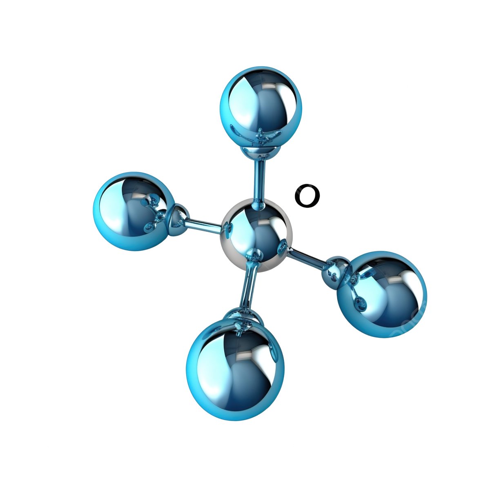

<ion-app>
  <!-- Split Pane para el menú -->
  <ion-split-pane contentId="main-content" when="(min-width: 768px)">
    <!-- Menú lateral -->
    <ion-menu contentId="main-content" side="start" menuId="main-menu" *ngIf="shouldShowSidebar()">
      <!-- <ion-header>
        <ion-toolbar>
          <ion-title>Bienvenido</ion-title>
        </ion-toolbar>
      </ion-header> -->
      <!-- Contenido del menú -->


      <ion-content>
        <!-- Sección del perfil -->
        <div class="avatar-container">
          <ion-avatar class="avatar">
            
          </ion-avatar>
          <ion-label class="label-info">
            <p>Bienvenidos</p>
            <h2>ESTRUCTURA 2025</h2>
          </ion-label>
        </div>

        <!--Item Divider -->
        <ion-list>
          <ion-item-divider>
            <ion-label></ion-label>
          </ion-item-divider>
        </ion-list>

        <!-- Opción del menú -->
        <ion-list>
          <ion-item lines="none" detail="false" routerLink="/home" routerLinkActive="selected"
            [routerLinkActiveOptions]="{ exact: true }">
            <ion-icon name="home" slot="start"></ion-icon>
            <ion-label>Inicio</ion-label>
          </ion-item>
          <ion-item lines="none" detail="false" routerLink="/register-users" routerLinkActive="selected"
            [routerLinkActiveOptions]="{ exact: true }">
            <ion-icon name="person-add" slot="start"></ion-icon>
            <ion-label>Usuarios</ion-label>
          </ion-item>
          <ion-item lines="none" detail="false" routerLink="/buscador" routerLinkActive="selected"
            [routerLinkActiveOptions]="{ exact: true }">
            <ion-icon name="search" slot="start"></ion-icon>
            <ion-label>Buscador</ion-label>
          </ion-item>

          <!-- <ion-item (click)="irAExamen()">
            <ion-icon name="add-circle" slot="start"></ion-icon>
            <ion-label>Crear Examen</ion-label>
          </ion-item>
          <ion-item (click)="irExamens()">
            <ion-icon name="clipboard" slot="start"></ion-icon>
            <ion-label>Examenes</ion-label>
          </ion-item>
          <ion-item (click)="IraResultados()">
            <ion-icon name="podium" slot="start"></ion-icon>
            <ion-label>Resultados</ion-label>
          </ion-item> -->

        </ion-list>
      </ion-content>

      <!-- Pie de menú -->
      <ion-footer>
        <ion-toolbar class="toolbar">
          <ion-title class="tittle">v1.0.2</ion-title>
          <!-- <ion-button expand="block" color="secondary" fill="solid">
            <ion-icon name="log-out-outline" slot="start"></ion-icon>
            Cerrar sesión
          </ion-button> -->
        </ion-toolbar>
      </ion-footer>
    </ion-menu>

    <!-- Contenido principal -->
    <ion-router-outlet id="main-content"></ion-router-outlet>
  </ion-split-pane>
</ion-app>